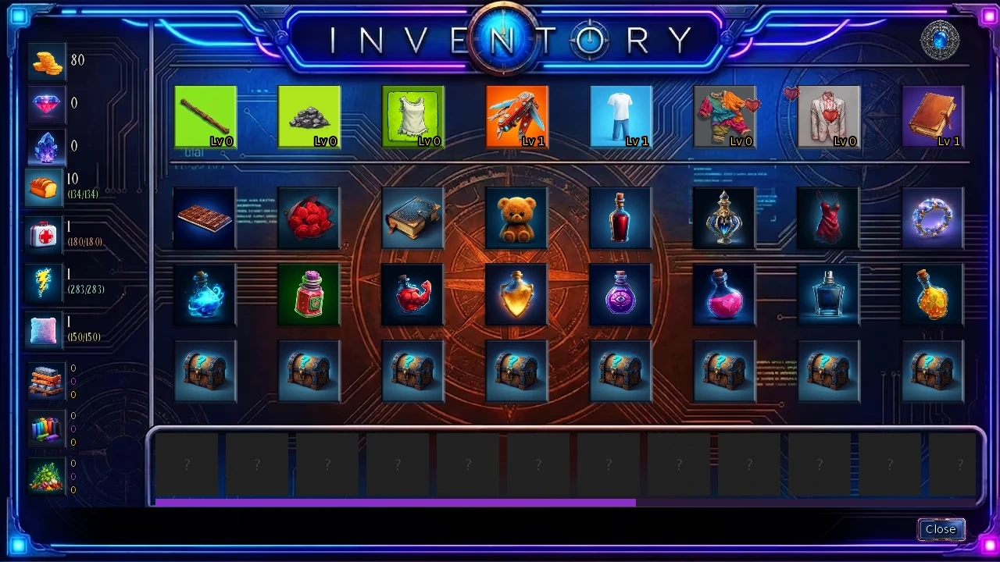
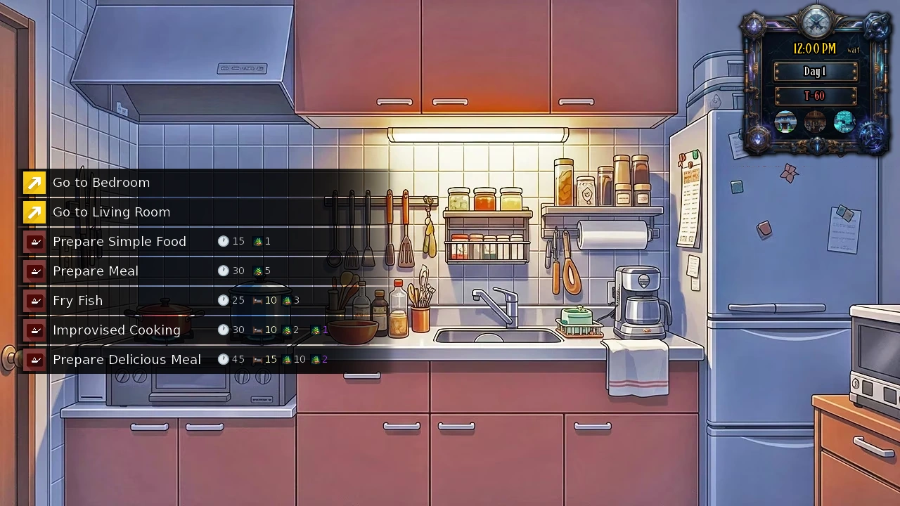
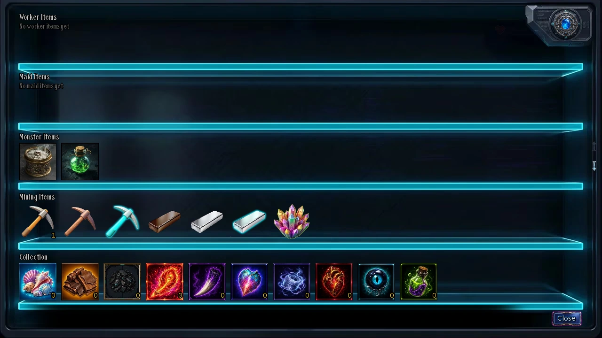
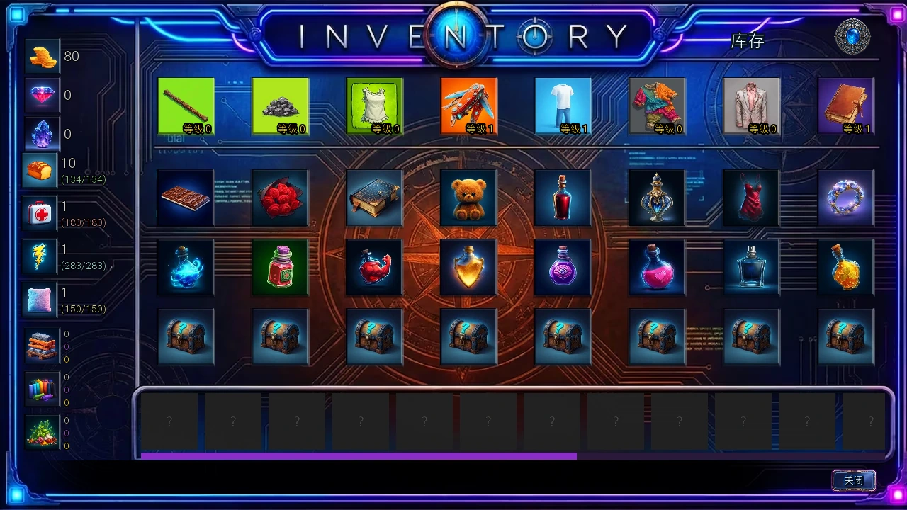
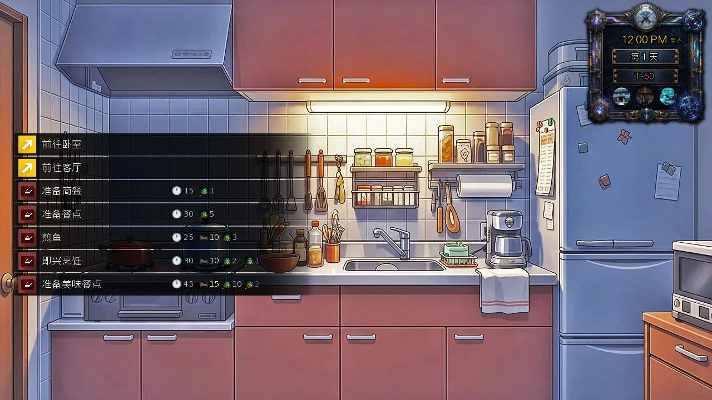

Select a screenshot to enlarge it. Screens show example inventories and progress.
Inventory and Supplies do different jobs
Open Inventory to check your personal resources, equipment, gifts, potions, mystery slots and Key Items. The round button at the upper right switches to Supplies; the same button returns to Inventory. Owning an item for a worker, maid or army hero does not equip it on your own character.
Hover over an icon for its current name and effect. A zero count, an undiscovered mystery slot and an unavailable action have different meanings. When a recovery item cannot be used, check both the stock and the relevant resource maximum.

Currencies, stock and recovery
Wealth, Gems, Crystals, Dragon Coins and Sea Shells are distinct currencies. A large cash balance cannot pay a Crystal or Dragon Coin price. Materials, Fabrics and Ingredients each have Common, Rare and Epic quantities; tiers are not automatically interchangeable.
| Consumable stock | Restores per item |
|---|---|
| Food | Satiation +10 |
| Medicine | Health +25, or +50 with Willow’s enhanced healing |
| Energy Items | Energy +25, or +50 with enhanced healing |
| Comfort | Calm +25, or +50 with enhanced healing |
Food and the three recovery stocks are used from the left side of Inventory. Recovery stops at the current maximum. A full relevant resource prevents ordinary use instead of consuming stock for no benefit. Willow’s enhanced healing changes recovery amounts; it is separate from the brothel Infirmary’s Medicine level. See Willow’s guide for her progression.
For Crystal purchases and repeatable sources, use Crystals and Doomsday. Several Crystal services are repeatable; they are not all once-per-timeline purchases.
Cooking and Ingredients
At your modern Uptown home, enter the Kitchen. Prepare Simple Food needs no learned cooking skill. Other options appear after learning their named skills. Cooking is also a core stat: the learned skill Cook Food and the numeric Cooking stat are different requirements.
Costs below are base minutes / Energy. Ingredient columns are Common / Rare / Epic. Satiation restoration uses your base Cooking before this meal’s gain, and stops at the normal maximum. Food is added to stock as well as restoring the listed Satiation immediately.
| Action | Learned skill | Min / Energy | Ingredients | Food stock | Satiation | Stat gain |
|---|---|---|---|---|---|---|
| Prepare Simple Food | None | 15 / 0 | 1 / 0 / 0 | +1 | Cooking | Effective-Luck% chance of Cooking +1 |
| Prepare Meal | Cook Food | 30 / 0 | 5 / 0 / 0 | +3 | Cooking + 10 | Cooking +1 |
| Fry Fish | Fry Fish | 25 / 10 | 3 / 0 / 0 | +3 | 10 | — |
| Improvised Cooking | Creative Cooking | 30 / 10 | 2 / 1 / 0 | +3 | Cooking + 10 | Cooking +1 |
| Prepare Delicious Meal | Master Chef | 45 / 15 | 10 / 2 / 0 | +10 | Cooking × 2 | Cooking +1 |
Fry Fish currently spends Common Ingredients, rather than taking a caught fish out of your fishing collection. Do not discard a collection fish to satisfy this recipe. Gather ordinary Ingredients through Nature Walk or Forage Ingredients. Learn basic Cook Food through the Culinary School; later lessons, including Master Chef, are covered by Chef Martha and the Skills reference.
Cooking for Rose & Thorn and preparing its Hearty Feast use the business kitchen and separate rules. They are not personal Food-stock recipes; see the brothel kitchen guide.

Eight personal equipment slots
| Equipment | What its level means |
|---|---|
| Melee Weapon / Armor | Base levels 0–10; physical combat equipment. Extra effective levels can add to the base level. |
| Ranged Weapon | Base levels 0–10. Neural Targeting prizes can grant late upgrades; TD reads the weapon’s base level. |
| Grimoire | Levels 1–10; improves magic and certain arcane actions. High levels include character-linked upgrades. |
| Casual / Formal / Dating Outfit | Separate clothing levels, normally up to 5; meeting or route requirements can ask for one particular outfit. |
| Proficiency Item | Normally up to 5; the purchased Proficiency Upgrade can permit 10. Its specialty-work income and story-miniboss benefits differ from ordinary weapon damage. |
The three clothing slots plus the other five equipment types make eight slots. Permanent upgrades replace the previous tier; they are not separate spare weapons waiting to be equipped. The cyan effective-level bonus is different from the item’s paid level. An exact-level purchase requirement still checks its own stated level.
Forged gauntlets, helmets, shields and pauldrons are Key Items with their own effects. They do not replace the main Armor slot. See Blacksmith and Forge and Combat. The player’s armor, TD hero armor and a TD hero’s Shield stat also remain separate.
Optional reference: equipment names by level
Show weapon, armor, Grimoire and clothing names
| Level | Melee Weapon | Armor | Ranged Weapon | Grimoire |
|---|---|---|---|---|
| 0 | Wooden Club | Tattered Rags | Throwing Rocks | — |
| 1 | Wooden Sword | Leather Armor | Slingshot | Leather Grimoire |
| 2 | Bronze Sword | Chainmail Armor | Pistol | Bound Grimoire |
| 3 | Iron Sword | Plated Armor | Plasma Pistol | Arcane Grimoire |
| 4 | Steel Sword | Knight Armor | Assault Rifle | Ancient Grimoire |
| 5 | Mithril Sword | Royal Armor | Cryo Rifle | Celestial Grimoire |
| 6 | Enchanted Sword | Bone Armor | Crystal Blaster | Astral Grimoire |
| 7 | Infernal Sword | Infernal Armor | Fusion Cannon | Voidbound Grimoire |
| 8 | Runic Sword | Divine Armor | Vortex Cannon | Starforged Grimoire |
| 9 | Divine Sword | Prismatic Armor | Divine Blaster | Mythic Grimoire |
| 10 | Celestial Sword | Celestial Armor | Celestial Cannon | Chrono-Celestial Grimoire |
| Level | Casual Outfit | Formal Outfit | Dating Outfit |
|---|---|---|---|
| 1 | Basic Casual Outfit | Basic Formal Outfit | Basic Dating Outfit |
| 2 | Cool Casual Outfit | Enhanced Formal Outfit | Enhanced Dating Outfit |
| 3 | Superior Casual Outfit | Distinguished Formal Outfit | Stylish Dating Outfit |
| 4 | Premium Casual Outfit | Premium Formal Outfit | Premium Dating Outfit |
| 5 | Legendary Casual Outfit | Legendary Formal Outfit | Legendary Dating Outfit |
Ordinary shops and Grimoire progression
The table lists base standard shop offers. Material triples are Common / Rare / Epic in that order. Prices apply to the next eligible tier, not to skipping all earlier levels; opening hours and ordinary time modifiers still apply. The same offer appearing at multiple locations is listed once.
Show ordinary upgrade prices
| Offer and level | Location | Wealth | Crafting cost | Minutes |
|---|---|---|---|---|
| Formal Outfit (0 → 1) | Clothing Store (Mall) | 100 | — | 20 |
| Cool Clothing (1 → 2) | Clothing Store (Mall) | 250 | — | 20 |
| Dating Clothing (0 → 1) | Clothing Store (Mall) | 100 | — | 20 |
| Dating Lvl 2 (1 → 2) | Clothing Store (Mall) / Tailor Shop | 250 | — | 20 |
| Ranged (0 → 1) | Resistance Hideout | 150 | — | 20 |
| Upgrade Ranged (1 → 2) | Resistance Hideout | 250 | Materials: 30, 0, 0 | 20 |
| Upgrade Ranged (2 → 3) | Resistance Hideout | 600 | Materials: 0, 20, 0 | 20 |
| Upgrade Ranged (3 → 4) | Resistance Hideout | 1,200 | Materials: 0, 0, 10 | 45 |
| Upgrade Ranged (4 → 5) | Resistance Hideout | 10,000 | Materials: 40, 25, 15 | 20 |
| Armor (0 → 1) | Village Market / Blacksmith Shop | 150 | — | 20 |
| Sword (0 → 1) | Village Market / Blacksmith Shop | 150 | — | 20 |
| Upgrade Armor (1 → 2) | Blacksmith Shop | 250 | Materials: 30, 0, 0 | 20 |
| Upgrade Sword (1 → 2) | Blacksmith Shop | 250 | Materials: 30, 0, 0 | 20 |
| Upgrade Armor (2 → 3) | Blacksmith Shop | 600 | Materials: 0, 20, 0 | 20 |
| Upgrade Sword (2 → 3) | Blacksmith Shop | 600 | Materials: 0, 20, 0 | 20 |
| Upgrade Armor (3 → 4) | Blacksmith Shop | 1,200 | Materials: 0, 0, 10 | 45 |
| Upgrade Sword (3 → 4) | Blacksmith Shop | 1,200 | Materials: 0, 0, 10 | 45 |
| Upgrade Armor (4 → 5) | Blacksmith Shop | 10,000 | Materials: 40, 25, 15 | 20 |
| Upgrade Sword (4 → 5) | Blacksmith Shop | 10,000 | Materials: 40, 25, 15 | 20 |
| Casual Lvl 3 (2 → 3) | Tailor Shop | 1,000 | Fabrics: 20, 0, 0 | 20 |
| Casual Lvl 4 (3 → 4) | Tailor Shop | 5,000 | Fabrics: 40, 5, 0 | 20 |
| Casual Lvl 5 (4 → 5) | Tailor Shop | 20,000 | Fabrics: 0, 10, 5 | 20 |
| Dating Lvl 3 (2 → 3) | Tailor Shop | 1,000 | Fabrics: 20, 0, 0 | 20 |
| Dating Lvl 4 (3 → 4) | Tailor Shop | 5,000 | Fabrics: 40, 5, 0 | 20 |
| Dating Lvl 5 (4 → 5) | Tailor Shop | 20,000 | Fabrics: 0, 10, 5 | 20 |
| Formal Lvl 2 (1 → 2) | Tailor Shop | 250 | — | 20 |
| Formal Lvl 3 (2 → 3) | Tailor Shop | 1,000 | Fabrics: 20, 0, 0 | 20 |
| Formal Lvl 4 (3 → 4) | Tailor Shop | 5,000 | Fabrics: 40, 5, 0 | 20 |
| Formal Lvl 5 (4 → 5) | Tailor Shop | 20,000 | Fabrics: 0, 10, 5 | 20 |
| Grimoire (1 → 2) | Arcane Shop | 1,000 | — | 30 |
Aziza also offers sequential Grimoire purchases: level 3 costs 5,000 Wealth and 3 Crystals at Friend; level 4 costs 10,000 and 4 Crystals at Close Friend; level 5 costs 50,000 and 5 Crystals at Crush. Each purchase takes 0 minutes and requires the preceding level and Aziza present at the Arcane Shop. These are separate from the initial 1→2 shop action.
The level 6–10 character upgrades are associated, in order, with Aziza, Blinky, Sashina, Sabbath and Nyxara. Find the corresponding character and read the offered action’s relationship, equipment and access requirements. Later ranged upgrades are detailed under Neural Targeting prizes; the Hollow’s advanced services are under Sylwithe’s Hollow.
Give gifts through the relevant activity
The first middle row contains relationship gifts. Use a character’s gift action or the appropriate date/training choice; clicking a gift icon alone does not choose a recipient. A gift’s presence in Inventory does not remove relationship, time, quantity or content requirements.
Ordinary gifts, crafted special gifts, permanent Key Items and worker-training presents serve different purposes. If an action asks for a named gift, carry that exact item rather than a similarly shaped accessory. See Relationships and Dating and worker-training gifts.
Potions and temporary effects
The second middle row contains eight enhancement consumables. Ordinary active effects expire after 24 in-game hours. An already active potion cannot be consumed again simply to extend the timer. Inventory’s red tint marks active effects; it is not a universal “bad item” warning.
| Inventory name | Effect |
|---|---|
| Time | Improves time efficiency in supported actions; dungeon movement and other activities use their own rules. |
| Antidote | Immediately fills Health, Energy and Calm; does not fill Satiation. It cannot be used when all three are full. |
| Power | Physical damage ×1.5. |
| Shield | Defensive potion; see Combat for the encounter-specific reduction. |
| Focus | Intelligence, Mystic, Technology and Perception +25 each. |
| Desire | Adds 200 Erotic Experience; also grants a temporary+50 Beast modifier when that mode is active. |
| Cologne | Charm and Attractiveness +10 each. |
| Luck | Luck +50. |
These bonuses are temporary. A requirement that explicitly checks a base stat is not automatically satisfied by a potion. Use the named action’s guide for those distinctions. Blood Orb trades and permanent upgrades are covered in Ruxandra’s Alchemy Shop.
Buying consumables
The Inventory label and purchase-action label can differ. These six regular purchase actions use the listed base costs; you must also have access to the location. Buying adds stock, then you choose when to consume it.
Show sellers, hours and costs
| Inventory → purchase action | Where | Start window | Base cost |
|---|---|---|---|
| Time → Time Distortion | Arcane Shop | 10:00–18:00 | $300; 1 Epic Ingredient; 5 min |
| Focus → Focus Elixir | Arcane Shop | 10:00–18:00 | $300; 1 Epic Ingredient; 5 min |
| Power → Power Elixir | Fighters Guild | 10:00–20:00 | $300; 1 Epic Ingredient; 5 min |
| Shield → Shield Elixir | Fighters Guild | 10:00–20:00 | $300; 1 Epic Ingredient; 5 min |
| Cologne | Clothing Store (Mall) | 09:00–19:00 | $200; 10 min |
| Antidote → Ambrosia Elixir | Rose & Thorn → Nurse’s Room | 09:00–16:00 | $300; 1 Epic Ingredient; 5 min |
Supported action-cost reductions
For Full Body Workout and supported intimate video activities, Time halves the action’s game-clock cost, Power halves its Energy cost, and Focus halves its Calm cost. Each positive cost rounds up and stays at least 1. The current action tooltip shows applicable reductions; other activities have their own rules.
The eight mystery slots
The third middle row begins with undiscovered icons. Obtaining an item reveals its slot. Knowing a slot exists does not grant the item or bypass its acquisition route.
Show item names and uses
| Item | Use |
|---|---|
| Toy | A small gift; use the recipient’s supported gift action. |
| Voucher | A named purchase or quest may request it; it is not ordinary Wealth. |
| Gemstone Heels | A named premium gift. |
| Fishing Bait | Fishing supply, consumed when the boat reaches a fishing ring. |
| Dragon Coin | Dungeon currency used by appropriate encounters and merchants. |
| Soul Jar | Used by Haunted Mansion soul collection. |
| Blood Orb | Fills Health, Energy, Calm and Satiation; Vampire+1, capped 999. |
| Valuables | Stolen goods; fence them through Arestes. |
Six Supplies categories, five visible rows
Supplies uses two snapped row positions. The first view shows five categories; scroll or use the on-screen arrow to reveal the bottom Army Equipment row. Each category can also contain its own horizontal item row. It is easy to own an army item without seeing that row in the first view.
| Category | Use |
|---|---|
| Worker Items | Equip workers through worker management; some owned-copy displays also count equipped items. |
| Maid Items | Choose equipment in maid management; the Supplies row is not the selected maid’s equipment screen. |
| Monster Items | Resident-care consumables and tools use their own management and visits. |
| Mining Items | Pickaxes, ingots, mineral clusters and Chronium; a held pickaxe is not a personal combat weapon upgrade. |
| Collection | Sea Shells, Leather, Components, Phoenix Feathers and Infinity drops have separate sources and uses. |
| Army Equipment | Acquire and equip items for a specific recruited TD hero in Barracks. |
Phoenix Feathers have an automatic-revival toggle. When enabled and a supported combat defeat triggers revival, one Feather is consumed and Health, Energy and Calm fill; Satiation is not part of that refill. Disabling the toggle preserves your stock. Its red tint indicates disabled automatic revival, unlike a potion’s active-effect tint.

Key Items and permanent collections
Key Items appear in the bottom horizontal bar. Most passive effects work while owned; do not look for a player equipment slot for every collected object. A numeric badge may be an upgrade level rather than a stack quantity, especially for Soul Stones and upgradeable Key Items.
Examples that help Kupie’s Love Training:
| Item | Passive effect |
|---|---|
| Eternal Rose | Click affection×2 |
| Sylph Crown | All Hearts and Charms production×2 |
| Celestial Trumpet | One phantom Sylph on each active Hearts job |
| Enchanted Harp | One phantom Sylph on each active Charms job |
| Heartstring Locket | Timed affection×2 |
Heartstring Locket and Ornate Locket are different items. Keep their names distinct when checking a purchase or reward. For stone effects and upgrades use Soul Stones; for what carries into a new timeline use New Game+. Pending Reclamation items should be processed or undone before a new timeline, not left in the queue.
库存与补给分别存放什么
打开「库存」可查看个人资源、装备、礼物、药剂、神秘物品栏与关键物品。右上角的圆形按钮可「切换到补给」，在补给页再点同一按钮可返回。员工、女仆或军队英雄的物品，不会自动装备到玩家身上。
将指针停在图标上可看当前名称与效果。数量为零、神秘栏位尚未发现、行动不可用，是不同情况。恢复物品不能使用时，既要看库存数量，也要看对应状态是否已经补满。

货币、库存与恢复
财富、宝石、水晶、龙币与海贝壳是不同货币。现金再多，也不能直接支付要求水晶或龙币的价格。材料、布料与食材各分普通、稀有、史诗三级，不能默认用低级资源抵扣高级资源。
| 恢复物品 | 每份恢复量 |
|---|---|
| 食物 | 饱腹感+10 |
| 药品 | 生命+25；取得Willow的强化治疗后为+50 |
| 精力物品 | 精力+25；强化治疗后为+50 |
| 舒适度 | 镇定+25；强化治疗后为+50 |
食物与三类恢复库存从左侧使用，最多恢复到当前上限；对应状态已满时，普通恢复物品不会继续消耗。Willow的强化治疗提高玩家恢复量，与青楼医务室的药品等级分别计算。相关步骤见Willow指南。
水晶的用途与可重复来源见水晶与末日倒计时。多项水晶服务可以重复购买，不能一概当作每周目限购一次。
烹饪与食材
在现代上城区的家中进入「厨房」。「准备简餐」不需要先学烹饪技能，其他选项在学会对应技能后出现。「烹饪」同时也是一项数值属性：已学会的烹饪技能与烹饪属性值，是两种不同的条件。
下表消耗为基础分钟数／精力，食材按普通／稀有／史诗排列。饱腹感恢复量使用本次烹饪加点之前的基础烹饪值，最多恢复到正常上限。完成行动既增加食物库存，也会立即恢复表列饱腹感。
| 行动 | 所需已学技能 | 分钟／精力 | 食材 | 食物库存 | 恢复饱腹感 | 属性成长 |
|---|---|---|---|---|---|---|
| 准备简餐 | 无 | 15 / 0 | 1 / 0 / 0 | +1 | 烹饪 | 按有效幸运百分比判定，成功则烹饪+1 |
| 准备餐点 | 烹饪 | 30 / 0 | 5 / 0 / 0 | +3 | 烹饪+10 | 烹饪+1 |
| 煎鱼 | 煎鱼 | 25 / 10 | 3 / 0 / 0 | +3 | 10 | — |
| 即兴烹饪 | 创意烹饪 | 30 / 10 | 2 / 1 / 0 | +3 | 烹饪+10 | 烹饪+1 |
| 准备美味餐点 | 厨艺大师 | 45 / 15 | 10 / 2 / 0 | +10 | 烹饪×2 | 烹饪+1 |
「煎鱼」当前消耗普通食材，不会从钓鱼收藏中取走一条鱼；无需丢弃收藏鱼来满足这份配方。普通食材可通过自然散步或采集食材获取。 基础烹饪可在烹饪学校学习；包括厨艺大师在内的后续课程见Chef Martha与技能索引。
「为玫瑰与荆棘做饭」与「烹制丰盛大餐」，属于经营厨房的独立规则，不能当作上述个人食物配方计算；详见青楼厨房指南。

八个个人装备栏位
| 装备 | 等级代表什么 |
|---|---|
| 近战武器／护甲 | 基础等级0–10；用于个人物理战斗。部分加成会提高有效等级。 |
| 远程武器 | 基础等级0–10；神经瞄准奖品可提供高阶升级。塔防读取武器本身的基础等级。 |
| 魔导书 | 等级1–10；改善魔法及部分奥术行动。高阶升级与人物服务和路线相连。 |
| 休闲装／正装／约会装 | 三项衣装分别升级，常规上限为5。人物事件可能只检查其中一项，不能互相代替。 |
| 专长物品 | 常规上限5；购买熟练度升级后可到10。专长工作收入与剧情小首领加成，不等于普通武器伤害。 |
三套衣装加上另外五类装备，共有八个栏位。永久升级会替换前一级，不会变成一把等着手动换上的备用武器。青色显示的有效等级加成，与已经购买的基础等级不同；要求特定基础等级的升级，仍按其自身条件检查。
锻造的护手、头盔、盾牌与肩甲属于各有作用的关键物品，不会取代主要「护甲」栏位。详见铁匠与锻造与战斗系统。玩家护甲、塔防英雄护甲、塔防英雄的护盾属性，也要分别查看。
可选参考：各等级装备名称
展开武器、护甲、魔导书与衣装名称
| 等级 | 近战武器 | 护甲 | 远程武器 | 魔导书 |
|---|---|---|---|---|
| 0 | 木棒 | 破烂布衣 | 投掷石块 | — |
| 1 | 木剑 | 皮甲 | 弹弓 | 皮革魔导书 |
| 2 | 青铜剑 | 锁子甲 | 手枪 | 束缚魔导书 |
| 3 | 铁剑 | 板甲 | 等离子手枪 | 奥术魔导书 |
| 4 | 钢剑 | 骑士护甲 | 突击步枪 | 古代魔导书 |
| 5 | 秘银剑 | 皇家护甲 | 冷冻步枪 | 天界魔导书 |
| 6 | 附魔剑 | 骨甲 | 水晶爆能枪 | 星界魔导书 |
| 7 | 炼狱之剑 | 炼狱护甲 | 聚变炮 | 虚空束缚魔导书 |
| 8 | 符文剑 | 神圣护甲 | 涡旋炮 | 星铸魔导书 |
| 9 | 神圣之剑 | 棱彩护甲 | 神圣爆能枪 | 神话魔导书 |
| 10 | 天界之剑 | 天界护甲 | 天界加农炮 | 时空天界魔导书 |
| 等级 | 休闲装 | 正装 | 约会装 |
|---|---|---|---|
| 1 | 基础休闲装 | 基础正装 | 基础约会装 |
| 2 | 酷感休闲装 | 强化正装 | 强化约会装 |
| 3 | 优质休闲装 | 优雅正装 | 时尚约会装 |
| 4 | 高级休闲装 | 高级正装 | 高级约会装 |
| 5 | 传说休闲装 | 传说正装 | 传说约会装 |
常规商店与魔导书升级
下表列出常规商店的基础报价。材料或布料的三个数字依次是普通／稀有／史诗数量。报价用于符合条件的下一级，不能跳过所有前级；营业时间与正常耗时修正仍然适用。同一报价出现在多个地点时，只列一行。
展开常规升级报价
| 行动与等级 | 地点 | 财富 | 制作资源 | 分钟 |
|---|---|---|---|---|
| 正装 (0 → 1) | 服装店（商场） | 100 | — | 20 |
| 酷感服装 (1 → 2) | 服装店（商场） | 250 | — | 20 |
| 约会服装 (0 → 1) | 服装店（商场） | 100 | — | 20 |
| 约会装等级2 (1 → 2) | 服装店（商场） / 裁缝店 | 250 | — | 20 |
| 远程 (0 → 1) | 反抗军藏身处 | 150 | — | 20 |
| 升级远程 (1 → 2) | 反抗军藏身处 | 250 | 材料: 30, 0, 0 | 20 |
| 升级远程 (2 → 3) | 反抗军藏身处 | 600 | 材料: 0, 20, 0 | 20 |
| 升级远程 (3 → 4) | 反抗军藏身处 | 1,200 | 材料: 0, 0, 10 | 45 |
| 升级远程 (4 → 5) | 反抗军藏身处 | 10,000 | 材料: 40, 25, 15 | 20 |
| 护甲 (0 → 1) | 村庄市场 / 铁匠铺 | 150 | — | 20 |
| 长剑 (0 → 1) | 村庄市场 / 铁匠铺 | 150 | — | 20 |
| 升级护甲 (1 → 2) | 铁匠铺 | 250 | 材料: 30, 0, 0 | 20 |
| 升级剑 (1 → 2) | 铁匠铺 | 250 | 材料: 30, 0, 0 | 20 |
| 升级护甲 (2 → 3) | 铁匠铺 | 600 | 材料: 0, 20, 0 | 20 |
| 升级剑 (2 → 3) | 铁匠铺 | 600 | 材料: 0, 20, 0 | 20 |
| 升级护甲 (3 → 4) | 铁匠铺 | 1,200 | 材料: 0, 0, 10 | 45 |
| 升级剑 (3 → 4) | 铁匠铺 | 1,200 | 材料: 0, 0, 10 | 45 |
| 升级护甲 (4 → 5) | 铁匠铺 | 10,000 | 材料: 40, 25, 15 | 20 |
| 升级剑 (4 → 5) | 铁匠铺 | 10,000 | 材料: 40, 25, 15 | 20 |
| 休闲装等级3 (2 → 3) | 裁缝店 | 1,000 | 布料: 20, 0, 0 | 20 |
| 休闲装等级4 (3 → 4) | 裁缝店 | 5,000 | 布料: 40, 5, 0 | 20 |
| 休闲装等级5 (4 → 5) | 裁缝店 | 20,000 | 布料: 0, 10, 5 | 20 |
| 约会装等级3 (2 → 3) | 裁缝店 | 1,000 | 布料: 20, 0, 0 | 20 |
| 约会装等级4 (3 → 4) | 裁缝店 | 5,000 | 布料: 40, 5, 0 | 20 |
| 约会装等级5 (4 → 5) | 裁缝店 | 20,000 | 布料: 0, 10, 5 | 20 |
| 正装等级2 (1 → 2) | 裁缝店 | 250 | — | 20 |
| 正装等级3 (2 → 3) | 裁缝店 | 1,000 | 布料: 20, 0, 0 | 20 |
| 正装等级4 (3 → 4) | 裁缝店 | 5,000 | 布料: 40, 5, 0 | 20 |
| 正装等级5 (4 → 5) | 裁缝店 | 20,000 | 布料: 0, 10, 5 | 20 |
| 魔导书 (1 → 2) | 奥术商店 | 1,000 | — | 30 |
Aziza另有连续的魔导书购买：3级需要朋友、5,000财富与3颗水晶；4级需要亲密朋友、10,000财富与4颗水晶；5级需要迷恋、50,000财富与5颗水晶。每项购买本身耗时0分钟，要求前一级魔导书，并且Aziza当时在奥术商店。这些购买与最初的1→2级商店行动分别提供。
6–10级魔导书依次与Aziza、Blinky、Sashina、Sabbath和Nyxara的升级行动相连。请按对应人物页面与当场提示，核对关系、装备和访问条件。远程武器的后期升级见神经瞄准奖品；幽谷的高阶服务见Sylwithe的幽谷。
从人物行动或活动中赠礼
中间第一排是关系礼物。应从人物的赠礼行动，或约会、训练中的对应选择送出；单独点击库存礼物图标，并不会自动选定收礼对象。拥有礼物，也不能代替好感、时段、数量或内容访问条件。
普通礼物、制作的特殊礼物、永久关键物品与员工训练赠礼，用途不同。行动要求某个具名礼物时，要准备该物品，不能用外观相似的饰品替代。详见关系、约会与亲密互动及员工训练赠礼。
药剂与临时效果
中间第二排是八类强化消耗品。常规持续效果在24个游戏内小时后结束；同一种效果仍生效时，不能再喝一瓶来延长计时。库存中的红色效果标记，不能一概理解为物品有问题。
| 库存提示名称 | 作用 |
|---|---|
| 时间 (Time) | 改善适用行动的时间效率；地下城移动与其他活动各按自身规则计算。 |
| 解毒药 (Antidote) | 立即补满生命、精力与镇定，不补饱腹感。三项已满时不能使用。 |
| 力量药水 (Power) | 物理伤害×1.5。 |
| 盾牌 (Shield) | 防御类药剂；不同遭遇的减伤方式见战斗指南。 |
| 专注 (Focus) | 智力、神秘、科技、感知各+25。 |
| 欲望 (Desire) | 增加200玩家情趣经验；相应模式开启时，另有临时+50兽性修正。 |
| 古龙水 (Cologne) | 魅力与吸引力各+10。 |
| 运气 (Luck) | 幸运+50。 |
这些属性加成是临时的。明确检查基础值的要求，不会自动被药剂绕过；具体以对应行动的指南为准。鲜血宝珠交易与永久强化见Ruxandra的炼金商店。
到哪里购买消耗品
库存名称与购买行动名称可能不同。以下六种常规购买行动按基础费用列出，地点本身也须已开放。购买后先加入库存，再由你决定何时使用。
展开购买地点、时段与费用
| 库存名 → 购买行动 | 地点 | 开始时段 | 基础费用 |
|---|---|---|---|
| 时间 → 时间扭曲 | 奥术商店 | 10:00–18:00 | 300财富；1份史诗食材；5分钟 |
| 专注 → 专注灵药 | 奥术商店 | 10:00–18:00 | 300财富；1份史诗食材；5分钟 |
| 力量药水 → 力量灵药 | 战士公会 | 10:00–20:00 | 300财富；1份史诗食材；5分钟 |
| 盾牌 → 护盾灵药 | 战士公会 | 10:00–20:00 | 300财富；1份史诗食材；5分钟 |
| 古龙水 | 服装店（商场） | 09:00–19:00 | 200财富；10分钟 |
| 解毒药 → 安布罗西亚灵药 | 玫瑰与荆棘 → 护士室 | 09:00–16:00 | 300财富；1份史诗食材；5分钟 |
适用活动的消耗减免
对「全身锻炼」及适用的亲密视频活动，时间效果使游戏内耗时减半，力量药水使精力消耗减半，专注使镇定消耗减半。每项正消耗向上取整，最低为1；当场行动提示会显示适用减免，其他活动各有自己的规则。
八个神秘物品栏位
中间第三排起初显示尚未发现的图标，取得对应物品后才会揭示。知道栏位用途，并不代表已经拥有物品，也不能跳过获取步骤。
展开物品名称与用途
| 物品 | 用途 |
|---|---|
| 玩具 | 小礼物，按收礼对象支持的赠礼行动使用。 |
| 兑换券 | 部分购买或任务会指定需要，不能直接当作普通财富。 |
| 宝石高跟鞋 | 具名的高级礼物。 |
| 钓鱼饵料 | 钓鱼补给，船触及钓鱼圈时消耗。 |
| 龙币 | 地下城货币，在对应遭遇与商人处使用。 |
| 灵魂罐 | 用于闹鬼宅邸的灵魂收集。 |
| 鲜血宝珠 | 补满生命、精力、镇定与饱腹感；吸血鬼+1，上限999。 |
| 贵重品 | 偷取的贵重品，通过Arestes销赃。 |
补给分六类，每次显示五行
补给页有两个固定的行位置：第一页显示五类，用滚轮或页面箭头切到下一组，才能看到最下方的军队装备。各类物品还可能有自己的横向列表。军队装备没在第一页出现，并不代表物品丢失。
| 类别 | 用途 |
|---|---|
| 员工物品 | 从员工管理中装备；部分持有数量也包括已装备的物品。 |
| 女仆物品 | 到女仆管理选择装备；补给行并不等于当前女仆的装备栏。 |
| 怪物物品 | 照料消耗品与工具在对应管理和探望行动中使用。 |
| 采矿物品 | 镐、锭、矿物簇与时源矿；持有镐不等于升级了个人战斗武器。 |
| 收藏 | 海贝壳、皮革、组件、凤凰羽毛与无限地下城掉落物，各有来源和用途。 |
| 军队装备 | 在兵营为具体的已招募塔防英雄选择物品。 |
凤凰羽毛有自动复活开关。开启后，在支持的战斗中被击倒并触发复活时，会消耗1根羽毛，补满生命、精力与镇定，不包含饱腹感。关闭开关可保留库存；这里的红色标记表示自动复活已关闭，与药剂的生效标记不同。
关键物品与永久收集
关键物品位于底部横向栏。多数被动效果持有即可生效，不是每件收集品都需要一个玩家装备栏位。图标上的数字也可能是强化等级，而非物品堆叠数量，尤其是灵魂石与可升级关键物品。
以下关键物品会帮助Kupie 的爱之训练：
| 物品 | 被动效果 |
|---|---|
| 永恒玫瑰 | 点击好感×2 |
| 小天使王冠 | 全部爱心与魅力生产×2 |
| 天界号角 | 每项正在进行的爱心工作额外获得1名幻影小天使 |
| 附魔竖琴 | 每项正在进行的魅力工作额外获得1名幻影小天使 |
| 心弦吊坠盒 | 随时间增长的好感×2 |
心弦吊坠盒与华丽吊坠盒是不同物品，核对购买或奖励时不要混淆。石头的效果与强化见灵魂石；新周目保留规则见新游戏+。再生工坊的待处理物品应先处理或撤回，不要留在队列里直接开启新时间线。
Adapted and updated from the community Chronoromancer Wiki. Community source and history · CC BY-SA 4.0. Game images © Chronoromancer Studio.